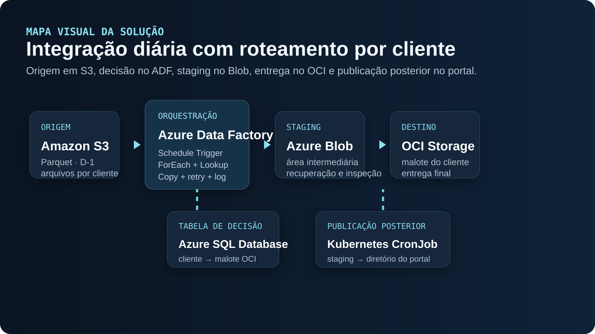
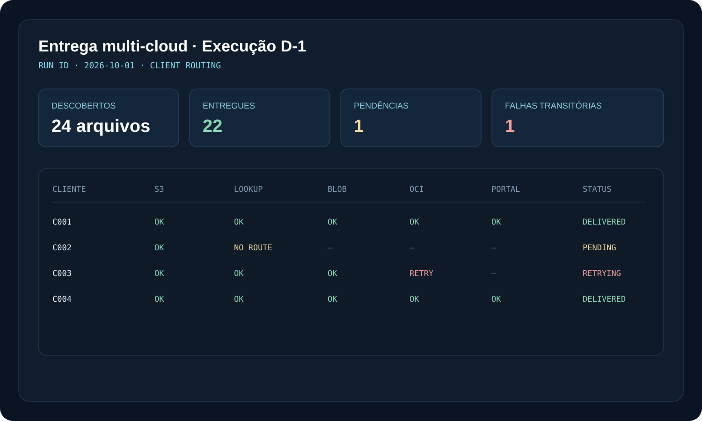

Quando o material original comprova uma implementação, eu descrevo como parte do caso. Quando discuto melhorias, alternativas ou mecanismos não documentados, marco explicitamente como análise técnica, trade-off ou evolução proposta.

- Deixar claro onde a decisão acontece
- Separar processamento, controle e publicação
- Tratar falhas sem confundir tipos de erro
- Facilitar operação, auditoria e evolução

Arquivos dependiam de roteamento por cliente e falhas em uma etapa podiam dificultar a leitura de onde a entrega parou.
A solução separa descoberta, decisão de destino, staging, entrega e publicação, deixando exceções e retomadas mais localizáveis.
01 / ESCOPO DOCUMENTADO
O que existia no caso
O fluxo real recebia arquivos Parquet no Amazon S3, calculava a referência D-1, percorria clientes no Azure Data Factory, consultava no Azure SQL o destino correspondente e movimentava os arquivos por uma área de staging no Azure Blob antes da entrega no OCI Object Storage. Uma rotina em Kubernetes também disponibilizava arquivos prontos para um portal. O caso documenta logs, novas tentativas, registro de exceções e reprocessamento por data.
Esta seção descreve apenas elementos sustentados pelo caso original. Detalhes de autenticação entre clouds, estratégia de idempotência e mecanismo exato de cópia Blob → OCI não estão documentados.
02 / IMPLEMENTAÇÃO
Separar orquestração, decisão de roteamento e transporte
Eu trataria o ADF como camada de orquestração: o Schedule Trigger inicia a execução, o pipeline calcula a data de referência e um ForEach percorre as unidades de processamento. O Lookup no Azure SQL resolve o mapeamento cliente → destino. A Copy Activity cuida do transporte suportado pelo conector usado em cada trecho. Essa separação evita colocar regra de negócio de roteamento dentro da própria movimentação de arquivos.
Trade-off: centralizar tudo no ADF simplifica operação e monitoramento, mas aumenta dependência da plataforma. Externalizar regras complexas para código pode melhorar testabilidade, porém cria mais componentes para implantar e observar.
03 / STAGING
Por que manter uma camada intermediária
O Azure Blob funciona como fronteira operacional entre origem e destino. Isso desacopla a leitura no S3 da entrega final, facilita reprocessar a segunda metade do fluxo e preserva uma cópia temporária para inspeção. Também permite que o portal consuma arquivos prontos sem depender diretamente do OCI.
Trade-off: staging aumenta armazenamento, movimentações e custo de egress. A alternativa é uma transferência direta S3 → OCI, mais simples no caminho feliz, porém com menos pontos de recuperação e potencialmente menos controle operacional.
04 / CONFIABILIDADE
Falha de um cliente não deveria derrubar o lote inteiro
O caso já trata ausência de cadastro como exceção por cliente. Em uma implementação robusta eu manteria estado por unidade processada: discovered, routed, staged, delivered e published. Falhas transitórias poderiam usar retry com backoff; falhas funcionais, como destino ausente, deveriam ser registradas sem retry cego. Reprocessamento precisa receber explicitamente a data e, idealmente, o cliente afetado.
Trade-off: retries automáticos aumentam resiliência, mas podem duplicar custo ou objetos se a operação não for idempotente. Por isso a repetição deve ser segura ou protegida por chave de execução/controle de existência.
05 / IDEMPOTÊNCIA E CONTROLE
Como eu impediria duplicidade em reprocessamentos
O material não documenta o mecanismo original de idempotência. Hoje eu adicionaria uma chave lógica como data_referencia + cliente + arquivo e registraria o estado em uma tabela de controle. Antes de publicar, o fluxo verificaria se aquela combinação já foi concluída e compararia tamanho, checksum ou versão do objeto quando disponível.
Trade-off: controle centralizado em banco facilita auditoria, mas adiciona dependência transacional. Confiar apenas na existência do objeto é mais simples, porém pode confundir arquivo parcial, versão antiga ou sobrescrita.
06 / OBSERVABILIDADE
O pipeline precisa responder onde a entrega parou
Eu registraria execution_id, cliente, arquivo, etapa, timestamps, status, tentativa e mensagem de erro. Métricas úteis seriam quantidade de arquivos descobertos, entregues, pendentes, falhas por etapa e tempo de processamento. O alerta deveria indicar em qual fronteira ocorreu a falha: S3, lookup, staging, OCI ou publicação no portal.
Trade-off: logs detalhados facilitam suporte, mas podem carregar dados sensíveis. O desenho deve evitar conteúdo de arquivos e limitar identificadores expostos.
07 / ALTERNATIVAS
Quando eu escolheria outra arquitetura
Se o volume e a latência exigissem processamento orientado a eventos, eu consideraria eventos na origem e uma camada de mensageria/orquestração em vez de um único agendamento diário. Se o objetivo fosse reduzir movimentos entre clouds, avaliaria transferência direta ou processamento mais próximo do destino. Para alto volume, também verificaria paralelismo, limites de API, throughput e custo de egress antes de simplesmente aumentar concorrência.
A escolha depende de SLA, volume, custo, conectividade e capacidade operacional da equipe. Não existe uma alternativa universalmente melhor.